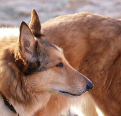
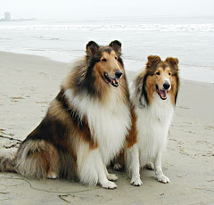

Довгошерстий коллі завжди має королівський вигляд - гордовита постава, пропорційні форми, граціозні рухи. Це одна з найкрасивіших порід вівчарок з дивно багатою і красивою шерстю. Елегантна, аристократична та захоплююча! У довгошерстих коллі дуже гнучкий темперамент - вона виросте такою, якою ви хочете її бачити. Коллі - це напрочуд надійний друг сім'ї, собака-компаньйон, яка відмінно взаємодіє з дітьми. Легко знаходить спільну мову з людьми, які ведуть активний спосіб життя та захоплюються спортом. Під час війни коллі успішно справлялися з обов'язками зв'язкового, санітара, сапера. Коллі може бути прекрасним рятувальником і поводирем сліпих.
Історія породи
Предками коллі були собаки, які потрапили на Британські острови разом з римлянами. Основна еволюція породи йшла в горах Шотландії та Північної Англії. Функціями тварини були випас овець та полювання. До 1860 року про коллі практично нічого не було відомо. Надзвичайну популярність цій прекрасній породі принесла англійська королева Вікторія. Під час однієї з поїздок до Шотландії вона випадково побачила цю граційну, витончену тварину і була неймовірно вражена та захоплена! Королева завела собі кілька шотландських вівчарок, після чого до розведення долучилися професійні собаківники.
Зовнішній вигляд
Статура коллі завжди граційна, велике значення має виразність голови. Така особливість досягається чудовим балансом та поєднанням черепної коробки та всього тіла, кольору і поставою очей, правильним положенням вух. Густа шовковиста шерсть, грива та своєрідне жабо надають тварині досить милого та чарівного вигляду. Згідно стандарту пси повинні бути 56-61 см, а суки 51-56 см. Вага може коливатися від 19 до 34 кг. Забарвлення породи є трьох відтінків - соболиним, трибарвним або мармуровим (мерль).
Здоровя, хвороби
Британський рекорд довгожительства встановила саме собака коллі на прізвисько Теффі - вона прожила майже 28 років! У породи є кілька видів захворювань, до яких вона схильна. Це ослаблення зору, глухота та аутоімунні захворювання. Для деяких довгошерстих коллі довге перебування на сонці небезпечно - може розвинутися фотодерматоз. Будьте уважні до вашого улюбленця, і при перших ознаках нездужання звертайтеся до кваліфікованого фахівця. Влітку слідкуйте, щоб у собаки завжди була можливість сховатися у тіні. Також коллі може знадобитися крем для засмаги на носі.
Утримання та догляд
Догляд за коллі не є складним. Слід приділяти увагу і вухам, очищаючи їх від шерсті, сірки і бруду. Гладити по вухах коллі не рекомендується, щоб не зіпсувати правильний постав. Як довгошерстий собака, звісно ж тварина потребує регулярного вичісування спеціальною щіткою. Коллі відчуває себе вільною та активною на ділянках, де можна вдосталь бігати і гратися. Тому приділяйте прогулянкам досить часу. Ваші старання будуть сторицею винагороджені. Довгошерсті коллі - щирі, веселі та віддані друзі, справжнє джерело радості для усієї родини!
Характер та темперамент
Коллі - дуже веселі, розумні, енергійні собаки, які напрочуд віддано відносяться до господаря. Вони помічають все, що відбувається навколо них, і в екстремальних ситуаціях на них можна покластися. Особливу турботу вони проявляють до дітей. Це - ніжні та турботливі няньки, які дуже сильно прив'язуються до господаря і до своєї сім'ї. Відомий випадок, коли коллі пройшов шлях в 3200 км, щоб знайти свою сім'ю. Також коллі входить в список собак з дуже чутливим слухом - поклик господаря вихованець може почути на відстані 1,5 км.
Харчування
Коллі непримхливі і досить невибагливі у їжі. Рідко страждають алергією та проблемами з шлунково-кишковим трактом. Найбільше цій породі підходить годівля сухими кормами, з додаванням до раціону вітамінів та мінеральних добавок. Раз в тиждень собаці потрібно давати кісточку з пресованих жил або шкіри, спеціальні собачі зубочистки. Натуральні кістки давати не можна - вони можуть викликати серйозні пошкодження кишечника. Комплекс збалансованого харчування надасть вашому улюбленцю внутрішньої сили та зовнішньої краси!
Дресування, тренування
Дресирувати коллі - справжнє задоволення: вони слухняні, кмітливі та активно прагнуть заслужити похвалу господаря. Найкращі результати досягаються при віддачі команд, що розрізняються по інтонації та тембру голосу. У собак сильно розвинені органи чуття, тому у тренуваннях не потрібно сильно підвищувати голос. При грубому зверненні собака перестає сприймати навіть найпростіші команди. Мільйони глядачів побачили на екранах прекрасний зразок розуму, відданості, благородства і краси - чудову Лессі! Американський дресирувальник Р.Ветервакс продемонстрував невичерпні можливості породи. Коллі засяяла у променях світової слави! В Італії коллі використовуються як сторожові та поліцейські собаки.